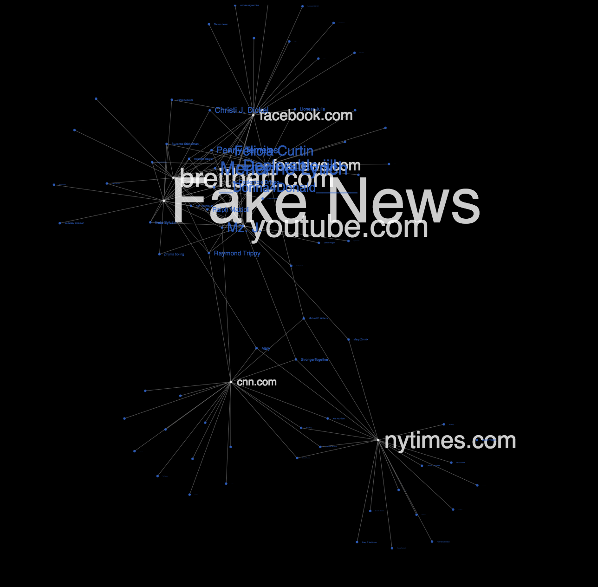
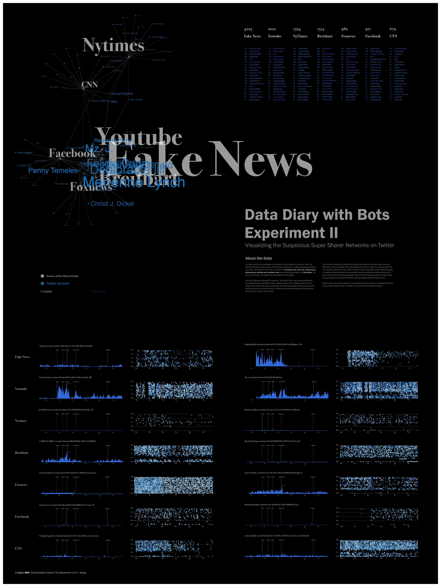

Tracking the Twitter Bots
05.2017 _ now [ a work in progress ]

People are strange when you are stranger, especially encountering online.
Maybe this person is even not a person, neither a bot.
The impulse for creating this project include but not only include the curiosities listed below:
How can a seemingly human twitter user metamorphose to a twitter bot?
Are there any criteria we could use to make a reasonable judgment on the reliability of the information we ingested from social media on a daily basis?
WTF is going on on the social media... ...
1.About The Data
The data scientists in the Lazer Lab from Northeastern University created an algorithm to cluster 7 predominant sites that tweeter users most frequently retweeted links from through Aug 2016 to Feb 2017, during presidential election.
Besides 6 news sites that have certain levels of credibility from the public, there is also a special group that is labeled as "FAKE NEWS" which is a medley of 449 sites that are defined as fake news sites.
The data scientists then identified individuals with unique names and locations from the voter records, and match them with Twitter users who share the same profile.
The final step is that the data scientists identified the most active top 20 sharers for each of these 7 sites, as well as their activities on Twitter during the election.
Thus, here we get a simple CSV file which annotates the "source and target" relationship of this super-sharer network
AND
A considerably large set of JSON file to describe the behavior of each of these active super-sharers.
2.Initial Exploration
Below is a static data visualization that presents comparisons amount twitter accounts that are suspicious at the initial stage.

One could roughly conclude from this infographic that traditional news agencies like New York Times and CNN locate more distant from the center of this network rather than social media such as FACEBOOK and YOUTUBE.
If one looks at how different users inside this network tweets over the election, it's not hard to spot that there is a huge difference in the daily aggregated volume and frequency one tweets by looking at the area-charts and heat-maps. The three significant electorial events mapped on top of the time-series implies certain users are ultra-active on these dates.
3.One Step Furthur While Making it Interactive
(This is where I am currently at)
The static visualization gives a finite summary of how the data could look like but the information it reals is far less than what is really in there. Thus, making it interactive and exploratory is a solution.
Following are some modular prototypes I created to test the performance of my code and saved for later using one the data pipeline is ready.
[UPDATE THE INTERNAL FORCE]
[TOGGLE BETWEEN HEATMAP]
[VOLUME INTERACTION]
The bi-product of this fun experiment is my MFA Thesis book which talks a lot about Embodied Interaction and how to design for Conversational User Interface.
Not super mature writing but you could still take a look at
MY MFA THESIS since there are plenty of concept maps I created for CUI and some discussion about how to deal with bot as human.
_tools:
d3.js,jQuery,ScrollMagic,React,node.js,mongoDB,IBM Watson,adobe creative suite